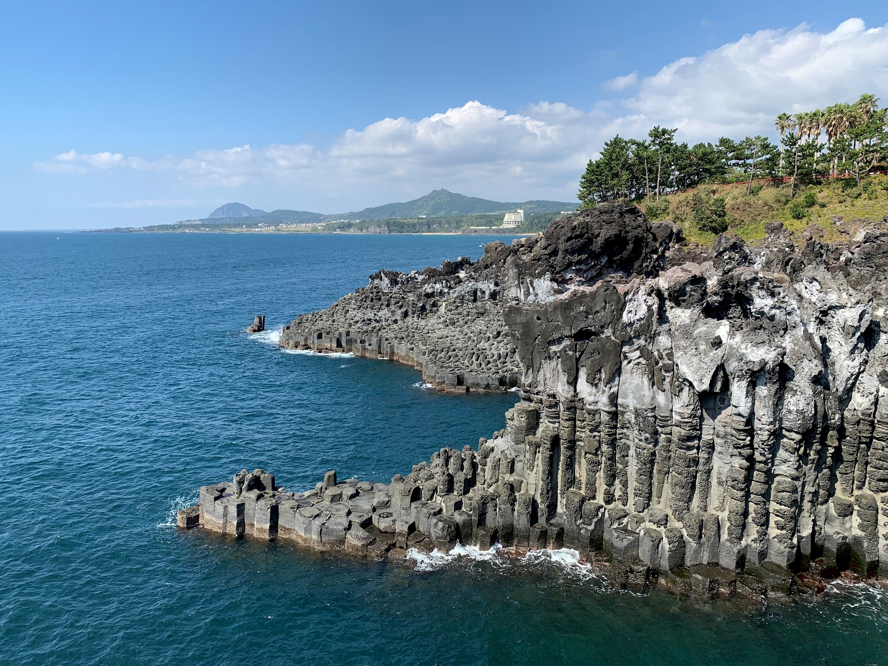
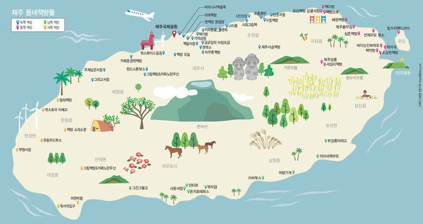
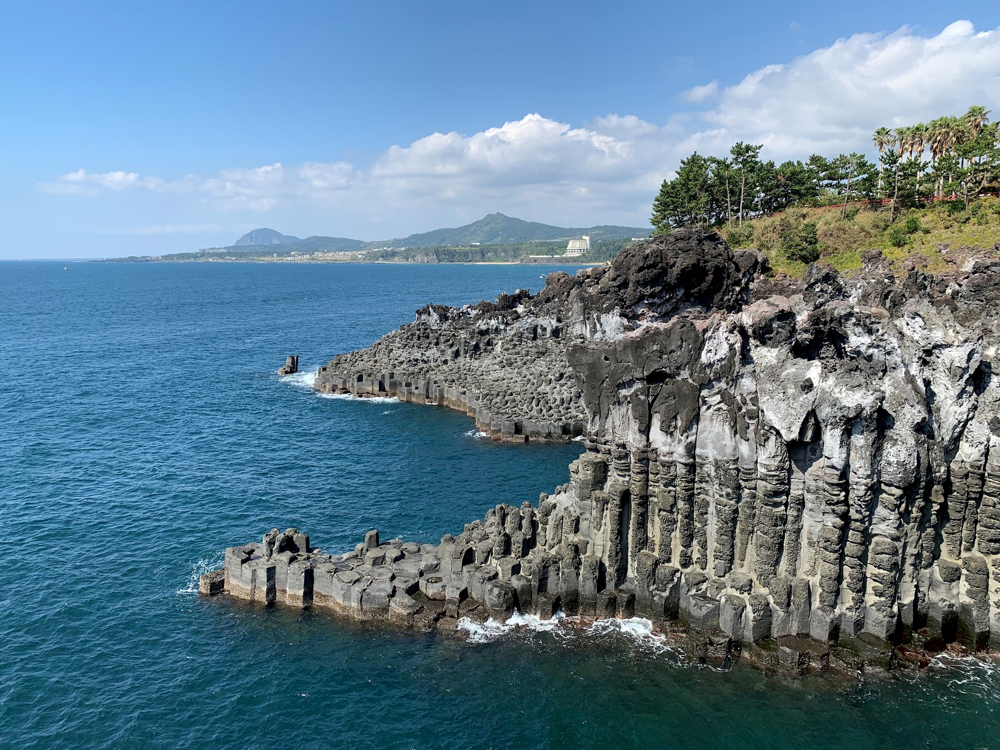
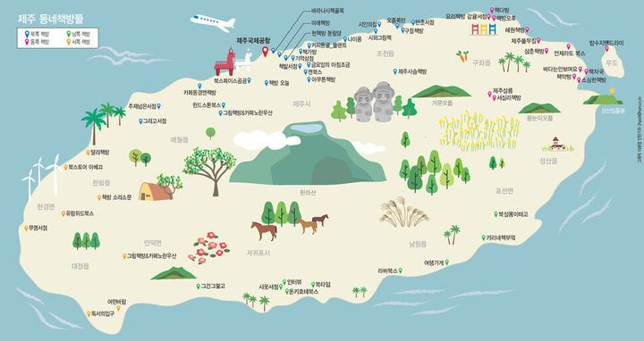
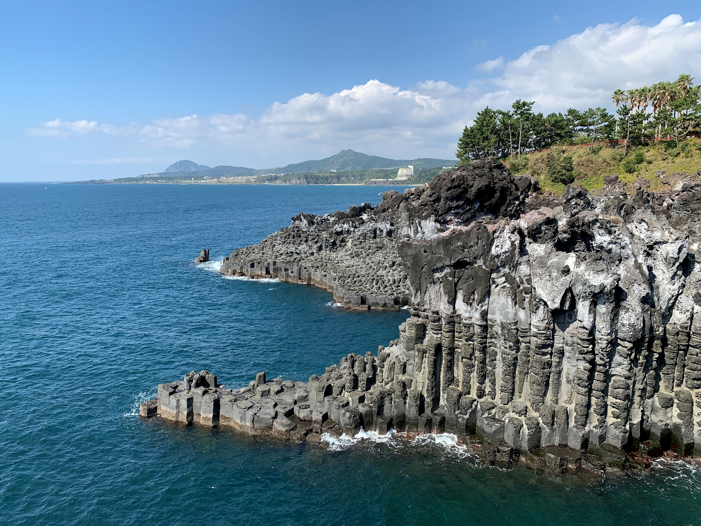
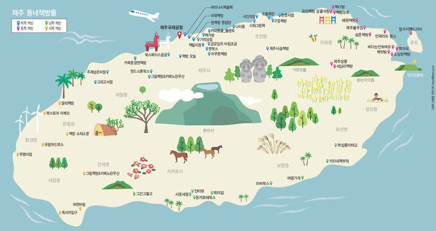

healing
travel
제주도 
제주시
명소: 이호테우해변 / 용연계곡 / 용두암 / 도두봉 / 한라수목원 / 누웨마루거리
맛집: 솔지식당 / 숙성도 / 신설오름 / 신해바라기분식 / 우진해장국 / 동문시장
카페: 인그리드 / 오드씽 / 카페진정성 / 앙뚜아네트
숙소: 메종글래드 / 롯데시티호텔 / 그랜드하얏트 / 라마다프라자 / 바당고띠

제주시
명소: 이호테우해변 / 용연계곡 / 용두암 / 도두봉 / 한라수목원 / 누웨마루거리
맛집: 솔지식당 / 숙성도 / 신설오름 / 신해바라기분식 / 우진해장국 / 동문시장
카페: 인그리드 / 오드씽 / 카페진정성 / 앙뚜아네트
숙소: 메종글래드 / 롯데시티호텔 / 그랜드하얏트 / 라마다프라자 / 바당고띠

제주시
명소: 이호테우해변 / 용연계곡 / 용두암 / 도두봉 / 한라수목원 / 누웨마루거리
맛집: 솔지식당 / 숙성도 / 신설오름 / 신해바라기분식 / 우진해장국 / 동문시장
카페: 인그리드 / 오드씽 / 카페진정성 / 앙뚜아네트
숙소: 메종글래드 / 롯데시티호텔 / 그랜드하얏트 / 라마다프라자 / 바당고띠
애월
명소: 곽지해수욕장 / 새별오름 / 항몽유적지 / 구엄리돌염전 / 수산봉 / 상가리야숲
맛집: 다운타우너 / 애월해녀의집 / 하갈비 / 버거요 / 노라바
카페: 노티드 / 테라도스 / 영국찻집 / 초록달과점 / 랜디스도넛
숙소: 애월더선셋 / 유후인제주 / 소길별하 / 살랑제주 / 드렌도트
한림
명소: 협재해수욕장 / 한림공원 / 월령선인장군락지 / 명월성지 / 성이시돌목장
맛집: 한림칼국수 / 재암식당 / 삼일식당 / 협재칼국수 / 파라토도스
카페: 소사오름 / 플로리아 / 아노록 / 우무 / 노고로시
숙소: 슬로우그로우라이프 / 아길라호텔 / 물뜰에쉼팜 / 에코그린리조트
중문/서귀포
명소: 쇠소깍 / 천지연폭포 / 정방폭포 / 대포주상절리 / 중문색달해변
맛집: 서귀포매일올레시장 / 커트러리 / 고기정류장 / 오는정김밥 / 미풍해장국
카페: 더클리프 / 아줄레주 / 모헨 / 바다다 / 보래드베이커스
숙소: 브로딕제주 / 춤추는달 / 스테이월드 / 제주잔잔